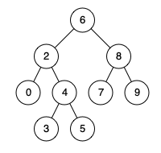

235. 二叉搜索树的最近公共祖先
利用 BST 有序性迭代下行：p、q 都小于当前结点往左，都大于往右，分叉处（或撞上其中之一）就是答案。
思路
- 不用递归：从根出发，
p.val、q.val都< cur.val→ 一起往左；都>→ 一起往右。 - 第一次「一大一小」或「其中一个等于 cur」的位置就是最近公共祖先（一个结点可以是自己的祖先）。
- BST 性质保证这个判断不漏不错，只走一条从根到答案的路，O(h)、无额外空间。
图解
最优解
1class Solution {2 public TreeNode lowestCommonAncestor(TreeNode root, TreeNode p, TreeNode q) {3 TreeNode cur = root;4 while (true) {5 // p、q 都更小：答案在左子树里6 if (p.val < cur.val && q.val < cur.val) cur = cur.left;7 // 都更大：答案在右子树里8 else if (p.val > cur.val && q.val > cur.val) cur = cur.right;9 // 分叉了（或其中一个就是当前结点）：这里就是答案10 else return cur;11 }12 }13}题目
给定一个二叉搜索树, 找到该树中两个指定节点的最近公共祖先。
百度百科中最近公共祖先的定义为：“对于有根树 T 的两个结点 p、q，最近公共祖先表示为一个结点 x，满足 x 是 p、q 的祖先且 x 的深度尽可能大（一个节点也可以是它自己的祖先）。”
例如，给定如下二叉搜索树: root = [6,2,8,0,4,7,9,null,null,3,5]

示例 1:
输入: root = [6,2,8,0,4,7,9,null,null,3,5], p = 2, q = 8 输出: 6 解释: 节点2和节点8的最近公共祖先是6。
示例 2:
输入: root = [6,2,8,0,4,7,9,null,null,3,5], p = 2, q = 4 输出: 2 解释: 节点2和节点4的最近公共祖先是2, 因为根据定义最近公共祖先节点可以为节点本身。
说明:
- 所有节点的值都是唯一的。
- p、q 为不同节点且均存在于给定的二叉搜索树中。
题面取自力扣当前版本。
数据快照 2026-11-04。题面版权归力扣所有，本站点仅供本人学习使用，请勿对外发布。